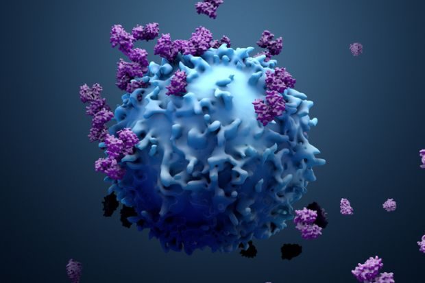

Hope Lives On
Early Detection Saves Lives

Cancer is a disease caused by the uncontrolled growth of abnormal cells in the body. Early diagnosis and proper treatment can significantly improve survival rates. Cancer is a large group of diseases defined by the uncontrolled growth and spread of abnormal cells that ignore normal growth signals, invade surrounding tissues, and can metastasize (spread) to other parts of the body, disrupting normal functions and potentially causing death. These malignant cells have genetic mutations that cause them to divide rapidly, form tumors, and evade the immune system, with causes often stemming from environmental/lifestyle factors, though some are inherited.
One of the most common cancers affecting women worldwide.
Often linked to smoking and air pollution.
Caused by excessive exposure to ultraviolet (UV) radiation.